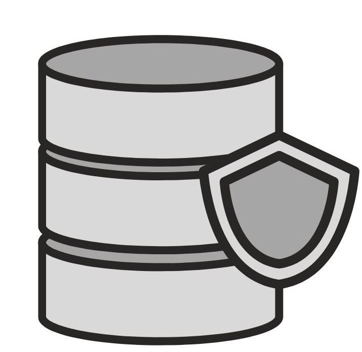

<mat-grid-list cols="4" rowHeight="100px">
  <mat-grid-tile [colspan]="4" [rowspan]="1">
    <mat-card class="example-card-upper">
        Servers :
        <mat-form-field appearance="outline">
          <mat-select [(value)]="selectedFood">
            
            <mat-option [value]="option.value" *ngFor="let option of dbs">{{ option.viewValue }}</mat-option>
          </mat-select>
        </mat-form-field>
        <mat-button-toggle-group name="favoriteColor"class="example-spacer" aria-label="Favorite Color">
            <mat-button-toggle value="red">Last 24 hours</mat-button-toggle>
            <mat-button-toggle value="green">Last 7 days</mat-button-toggle>
            <mat-button-toggle value="blue">Last 30 days</mat-button-toggle>
          </mat-button-toggle-group>
    </mat-card>


  </mat-grid-tile>
  <mat-grid-tile [colspan]="2" [rowspan]="3">


    <mat-card class="example-card">
        <mat-card-title>Servers</mat-card-title>
        <mat-divider inset ></mat-divider>
        <mat-card-content class="content-server">
          
          <p>Add one or more database servers where you want to run automated backups on.</p>
          <button  mat-raised-button color="primary">Add Server</button>
        </mat-card-content>
      
       
      </mat-card>
  </mat-grid-tile>
  <mat-grid-tile [colspan]="2" [rowspan]="2">
    <mat-card class="example-card1">
      <mat-card-title>Backup Stats</mat-card-title>
      <mat-divider inset ></mat-divider>
      <mat-card-content >
       <div class="stat">

         <div class="stat-content">
           Success Ratio
           <h2 class="red">0%</h2>
         </div>
         <div class="stat-content">
           Completed
           <h2>0</h2>
         </div>
         <div class="stat-content">
          Running
          <h2>0</h2>
         </div>
         <div class="stat-content">
          Failed
          <h2 class="red">0</h2>

         </div>
       </div>
      </mat-card-content>
    
     
    </mat-card>
  </mat-grid-tile>
</mat-grid-list>